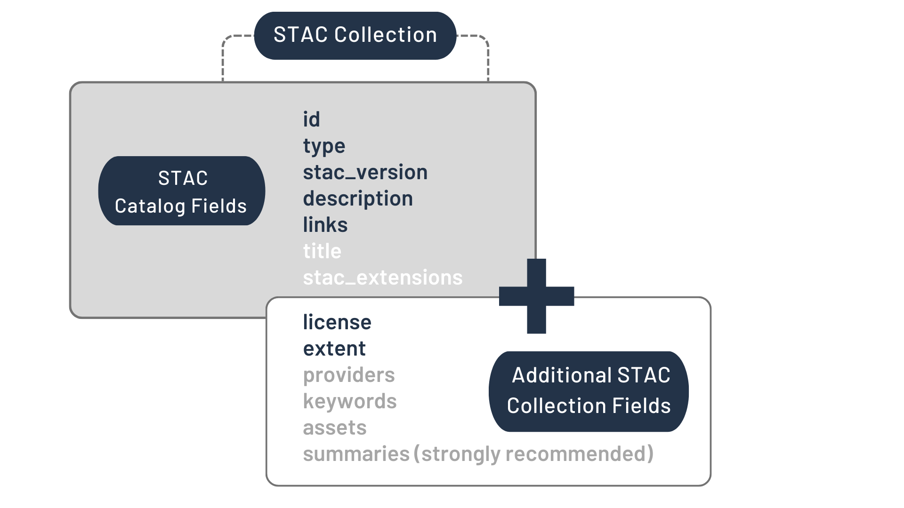
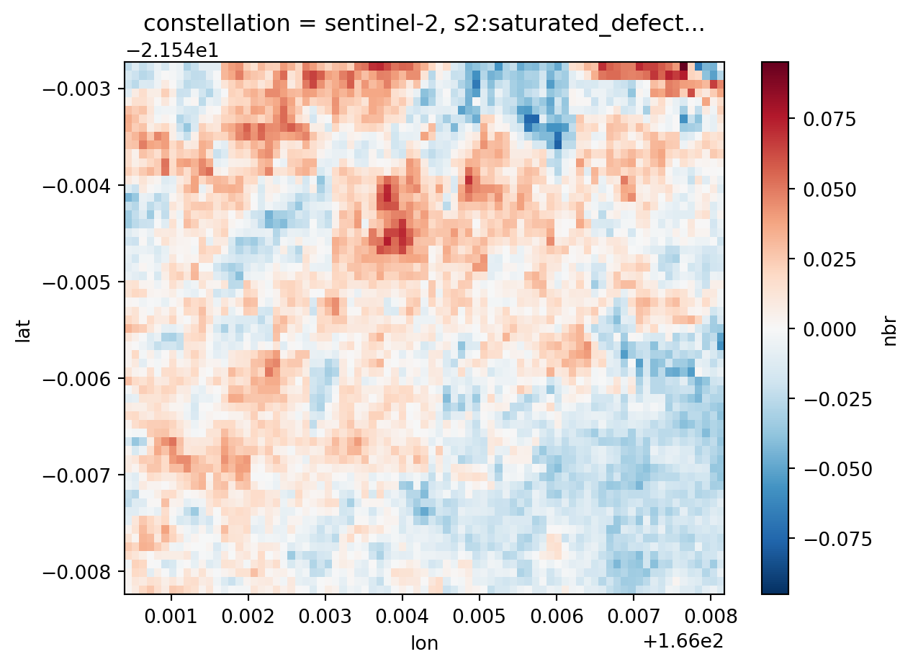

Benchmarking des librairies disponibles pour le Contrôle Qualité des surfaces brûlées : PYSTAC - SISPPEO - GEE
Introduction
Dans le cadre du contrôle qualité des surfaces brûlées obtenues par la chaîne des feux de l’OEIL, traitée par Insight, la recherche d’outils pour le calcul d’indicateurs pertinents afin de qualifier les surfaces détectées a amené APID à comparer trois possibilités : - La spécification STAC et les outils de gestion des données STAC en Python (PYSTAC et STACKSTAC) ; - La librairie SISPPEO ; - L’outil Google Earth Engine.
L’objectif de cette étude était de valider la faisabilité de bancarisation des données avec les différents outils, la facilité de traitement et d’évaluer les workflows respectifs.
Sur une des méthodes pré-identifiées a été réalisé une preuve de concept (PoC) détaillée. Le code de cette preuve de concept sur PYSTAC et la spécification STAC est joint au présent rapport sur le benchmarking.
Sur les deux autres outils, les avantages et inconvénients sont exposés ainsi que le temps de réalisation des adaptations nécessaires pour répondre à la problématique de caractérisation des surfaces brûlées détectées et de contrôle qualité.
Benchmarking
PYSTAC et la spécification STAC
Introduction à STAC
La spécification SpatioTemporal Asset Catalog est un standard, un langage unifié pour décrire les données géospatiales, ce qui permet des recherches et des requêtes sur ces données geospatiales facilitées.
En pratique, STAC est un réseau de fichiers JSON qui font références les uns aux autres, avec chaque fichier JSON qui se plie à un ensemble déterminé de spécifications en fonction de l’objet STAC qui est décrit.
Tout d’abord définissons ce qu’est un asset spatio-temporel :
Un SpatioTemporal Asset est tout fichier qui représente de l’information à propos de la planète Terre, information saisie à une certaine place et à un instant donné. Par exemple toute donné spatio-temporelle qui provient d’imagerie (satellite, avion, drones), du Synthetic Aperture Radar, des nuages de points (LIDAR, SLAM), des cubes de données et des vidéos full-motion.
L’idée clef est que le GeoJSON n’est pas l’objet d’étude, mais plutôt le fichier de références qui sert comme index aux assets STAC.
Composants STAC
La spécification STAC comporte trois composants essentiels :
Item
Catalogue
Collection
Chaque composant est autonome mais ils fonctionnent mieux de concert.
STAC Item
Un Item STAC est la brique fondamentale de la spécification STAC. C’est une fonctionnalité GeoJSON complétée par des métadonnées additionnelles, lesquelles permettent aux clients (ceux qui recherchent et requêtent les données) de parcourir les catalogues. Comme un Item STAC est un GeoJSON, tout SIG moderne ou librairie geospatiale peut le lire.
Une pratique commune dans l’utilisation de la spécification STAC pour l’imagerie est de définir un Asset STAC pour chaque bande d’une scène et qu’il y ait un seul Item STAC pour représenter toutes les bandes dans une seule scène.
Voici les champs GeoJSON d’un Item STAC JSON :
Les champs d’un STAC Item
Les infomations détaillées à propos de ces champs peuvent être trouvés dans le tableau suivant.
STAC Catalogue
Un catalogue est généralement le point de départ pour naviguer dans un réseau STAC. Un fichier catalog.jsoncontient les liens vers une combinaison d’autres Catalogues STAC, de Collections et/ou d’Items STAC.
On peut le penser comme une arborescence de dossiers dans un ordinateur.
Il n’y a pas de restrictions sur la manière dont un STAC Catalogue est organisé. Voici les champs d’un STAC Catalogue JSON :
Les champs d’un STAC Catalogue
Les infomations détaillées à propos de ces champs peuvent être trouvés dans le tableau suivant.
STAC Collection
Une Collection STAC est construite sur la spécification STAC Catalogue pour inclure des métadonnées additionnelles sur un ensemble d’items qui font partie de la collection.

Les champs d’une Collection STAC
Chercher un catalogue STAC
On va requêter un endpoint STAC API avec Python en utilisant la librairie pystac_client. Les images Sentinel-2 sont stockées en Cloud Oprimized Geotiff (COG) et disponibles sur AWS, AZURE, GCP et COPERNICUS.
Les catalogues STAC représentent parfois quelques problèmes. Certains sont incomplets et déclenchent une erreur lors de la récupération des scènes Sentinel-2. D’autres sont complets mais nécessitent un accès avec “credentials”. Et donc un compte utilisateur parfois payant.
Nous avons pour le moment travaillé avec le catalogue STAC d’AWS et avons rencontré certains problèmes notamment sur la bande de Classification de Scène (SCL) des produits L2A de Sentinel-2.
Test de STAC
Nous avons réalisé des tests pour le benchmarking de nos librairies. Le test de STAC est concluant. La réalisation d’une collecte d’indices grâce à pystac_client et stackstac est faisable plutôt simplement.
from pystac_client import Client as pscimport stackstacimport matplotlib.pyplot as pltimport geopandas as gpdimport pandas as pdimport datetimeimport numpyimport rioxarrayimport rasterio.featuresimport xarrayfrom shapely.geometry import mappingfrom pyproj import CRS
On va aller chercher les tuiles qui appartiennent à la collection sentinel-2-l2a, soit des réflectances de surface corrigées des effets atmosphériques. De même on définit nos CRS de travail.
On va aussi charger les géométries qui nous intéressent, les surfaces brûlées détectées par la chaîne des feux, sur les mois de septembre et octobre 2023. Le chemin d’accès pour les test était un chemin d’accès local. Cependant pour travailler proporement il sera nécessaire d’utiliser intake et dotenv : - Intake permettra d’ouvrir le catalogue des géométries en se connectant à la base de données postgres de l’OEIL. - Dotenv permettra de gérer proprement les credentials et les chemins d’accès.
Code
local_path_to_BA =r"C:\Users\Administrateur\OneDrive\Documents\APID\CLIENTS\OEIL\SISSPEO\datas\sentinel_surfaces_detectees_sept_oct_2023.gpkg"BurnedArea_data = gpd.read_file(local_path_to_BA)def preprocess_geometries_df(gdf):""" On rajoute une colonne date_ au format datetime et on passe de multipolygones à polygon On récupère la liste de dates des geométries de surfaces brûlées avec un intervalle de temps de 120 jours avant la première détection de surface brûlée et le geodataframe corrigé (passé de multipolygones à polygones) """ gdf['date_']= pd.to_datetime(gdf['date'], format='%Y-%m-%d').dt.date gdf = gdf.explode() datemin = (min(gdf['date_']) - datetime.timedelta(days=120)).strftime('%Y-%m-%d') datemax =max(gdf['date_']).strftime('%Y-%m-%d') dates =f"{datemin}/{datemax}"print(f"Interval temporel {dates}")return (gdf, dates)
Nous avons une liste de polygones fournie par l’OEIL qui ont déjà été caractérisés par photointerprétation que nous allons utiliser pour effectuer des tests. Nous définissons les les dictionnaires de géométries à partir de cette liste de polygones.
Nous allons maintenant pouvoir faire les tests sur chaque surfaces brûlées. Pour cela nous commencons par récupérer la bounding box du geodataframe filtré sur une géométrie. Nous récupérons les scènes Sentinel-2 L2A ayant moins d’un certain couvert nuageux (cc pour cloud cover) grâce à pystac_client. Et nous en concevont une stack dont nous vérifions le crs.
Code
def construct_stack(gdf_filtrer, cc, URL, collection, dates):""" Fonction de construction de la stack à partir d'un geodataframe filtré sur une surface brûlée. """ bbox = gdf_filtrer["geometry"].to_crs(4326).total_boundsprint(f'Emprise spatiale de la géométrie sélectionnée : {bbox}') client = psc.open(URL) search = client.search( collections=[collection], bbox=bbox, datetime=dates, query={"eo:cloud_cover": {"lt": cc}} )print(f"{search.matched()} scenes Sentinel-2 L2A trouvées dans l'interval temporel ayant - de {cc}% de couverture nuageuse") items = search.item_collection() stack = stackstac.stack( items, bounds_latlon=[bbox[0], bbox[1], bbox[2], bbox[3]], gdal_env=stackstac.DEFAULT_GDAL_ENV.updated( {'GDAL_HTTP_MAX_RETRY': 3,'GDAL_HTTP_RETRY_DELAY': 5, }), epsg=4326 ).rename({'x': 'lon', 'y': 'lat'})print("stack.crs", stack.crs)return stack
On utilise la Classification de Scène de Sentinel (bande scl) pour faire un test sur le couvert nuageux. En effet grâce à cette classification on peut tester à l’échelle de la géométrie si un pixel est bon ou pas. Pour l’instant nous ne faisons que des test simple sur la totalité de la bounding box définie à partir de la géométrie.
Les labels du produit SCL
Après réflexion, nous nous sommes aperçus qu’il ne fallait pas filtrer au départ (la requête initiale) sur le couvert nuageux (cc) car nous pourrions éliminer des dates qui seraient nécessaires et sur lesquelles la géométrie est tout de même visible. Ainsi le premier filtre n’est pas nécessaire mais il faut que le filtre grâce à la classification de scènes Sentinel soit bien restrictif.
Ce test sur le couvert nuageux est ce qui prend le plus de temps dans le preprocessing des données. Nous sommes sur des temps de traitement de l’ordre de la minute sur un monothread avec un processeur à 2,4 GHz et avec 16 Go de RAM. Il est donc important de réfléchir à la sélection des dates qui seront utiles pour déterminer si la surface est brûlée ou non.
Pour filtrer 13 images d’une stack sentinel comprenant 27 scènes, nous avons mis exactement 40 secondes pour une surface de 6 hectares. Sur la configuration décrite précédemment.
Sur ce point, la question d’images de références par type d’écosystèmes peut être intéressant. En effet en disposant d’images de références de l’intégralité de la NC, nous pourrions éviter de conserver 13 scènes et n’en conserver que 2 ou trois.
Code
def select_scenes_without_cc(gdf_filter, stack):""" On utilise la Scene Classification de Sentinel pour vérifier que la zone brulée est visible sur l'image. """ data_times = pd.to_datetime(stack['time']).date dates_burnedarea = gdf_filter['date_'].values images_to_keep = []for i, time inenumerate(data_times):if time in dates_burnedarea: images_to_keep.append(i)print(f"on conserve automatiquement l'image {i}")continue scl_data = stack.isel(time = i).sel(band ="scl") mask = (scl_data>=4) & (scl_data<=7) filtered_data = scl_data.where(mask) percentage = filtered_data.count() / scl_data.count() *100if percentage >95:print(f"on prend l'image sufisamment peu couverte {i}") images_to_keep.append(i) data_to_keep = stack.isel(time=images_to_keep)print(f"Nombre d'images après filtrage :{len(images_to_keep)}")return data_to_keep
On peut maintenant faire notre calcul d’indices. Les indices sont définis dans le document d’étude de faisabilité réalisé précédemment. Dans cet exemple on ne calcule que les indices ndvi, nbr, nbr+, bais2.
L’étude des données brutes (bande “red”) nous montre que nous avons des valeurs de réflectances négatives. C’est un point de vigilance à adresser. Après consultation des métadonnées nous nous sommes aperçus qu’un offset de -0.1 était appliqué aux bandes.
Afin de résoudre cette problématique et de ne pas avoir des valeurs de ndvi ou d’autres indices abbérantes (nous obtenions des valeurs de ndvi en-dehors de la plage -1 à +1), nous avons donc corrigé l’offset de -0.1 pour toutes les bandes.
Un point d’attention est à avoir sur cet offset. La formule à appliquer est : L2A_SRi = (L2A_DNi + BOA_ADD_OFFSETi) / QUANTIFICATION_VALUEi
Pour autant nous n’avons pas trouvé les différents éléments de cette formule. Un travail d’adaptation du code sera à effectuer. Nous n’avons trouvé qu’un offset de -0,1 sur les bandes et une mise à l’échelle de 0,0001.
Ensuite seulement nous pouvons calculer nos indices.
Code
def calcul_indices (data_to_keep):""" On calcule les indices à partir de la stack data_to_keep """ data_indices = data_to_keep.sel(band=["blue","rededge2", "rededge3", "green","red", "nir","nir08","swir22", "scl"]).to_dataset(dim='band')for elt in data_indices.data_vars : data_indices[elt] = data_indices[elt] +0.1#Correction de l'offset data_indices['ndvi'] = ((data_indices['nir'] - data_indices['red'])/(data_indices['nir'] + data_indices['red'])) data_indices['nbr'] = ((data_indices['nir'] - data_indices['swir22'])/(data_indices['nir'] + data_indices['swir22'])) data_indices['nbr+'] = ((data_indices['swir22'] - data_indices['nir08'] - data_indices['green'] - data_indices['blue'])/(data_indices['swir22'] + data_indices['nir08'] + data_indices['green'] + data_indices['blue'])) data_indices['bais2'] = (1-(numpy.sqrt((data_indices['rededge2'] * data_indices['rededge3'] * data_indices['nir08'])/data_indices['red']))*((data_indices['swir22'] - data_indices['nir08'] )/ numpy.sqrt((data_indices['swir22'] + data_indices['nir08'] ))+1))return data_indices
On va maintenant faire un masque de la géométrie et le rajouter à notre dataset.
Code
def create_mask(dataset, gdf):""" On utilise le geodataframe filtré sur la géométrie voulue pour créer un masque de la geométrie et le rajouter au dataset """ ShapeMask = rasterio.features.geometry_mask(gdf['geometry'].to_crs(4326).apply(mapping), out_shape =(len(dataset.lat), len(dataset.lon)), transform = dataset.transform, invert =True) ShapeMask = xarray.DataArray(ShapeMask, dims = ("lat","lon")) dataset['mask'] = ShapeMaskreturn dataset
On va faire tourner toutes ces fonctions pour réaliser les traitements. C’est un test sur une géométrie que l’on sait brûlée (surface_id = 359594) pour poser les idées et montrer les exemples.
On prend un cloud cover (cc) de 100 pour que le premier filtre sur la requête ne soit pas du tout restrictif.
Les résultats des tests effectués sur 10 surfaces brûlées, 10 surfaces considérées comme nous brûlées et 10 surface en doute après la photo-interprétation sont organisées dans un autre document.
C:\Users\Administrateur\AppData\Local\Temp\ipykernel_19460\99496939.py:12: FutureWarning: Currently, index_parts defaults to True, but in the future, it will default to False to be consistent with Pandas. Use `index_parts=True` to keep the current behavior and True/False to silence the warning.
gdf = gdf.explode()
E:\APP_GLOBAL\PYTHON\Lib\site-packages\stackstac\prepare.py:408: UserWarning: The argument 'infer_datetime_format' is deprecated and will be removed in a future version. A strict version of it is now the default, see https://pandas.pydata.org/pdeps/0004-consistent-to-datetime-parsing.html. You can safely remove this argument.
times = pd.to_datetime(
Interval temporel 2022-09-12/2023-10-30
Emprise spatiale de la géométrie sélectionnée : [166.00049239 -21.54826384 166.00819187 -21.54280814]
140 scenes Sentinel-2 L2A trouvées dans l'interval temporel ayant - de 100% de couverture nuageuse
stack.crs epsg:4326
on prend l'image sufisamment peu couverte 8
on prend l'image sufisamment peu couverte 9
on prend l'image sufisamment peu couverte 12
on prend l'image sufisamment peu couverte 13
on prend l'image sufisamment peu couverte 16
on prend l'image sufisamment peu couverte 17
on prend l'image sufisamment peu couverte 31
on prend l'image sufisamment peu couverte 32
on prend l'image sufisamment peu couverte 39
on prend l'image sufisamment peu couverte 40
on prend l'image sufisamment peu couverte 47
on prend l'image sufisamment peu couverte 48
on prend l'image sufisamment peu couverte 53
on prend l'image sufisamment peu couverte 58
on prend l'image sufisamment peu couverte 59
on prend l'image sufisamment peu couverte 64
on prend l'image sufisamment peu couverte 65
on prend l'image sufisamment peu couverte 66
on prend l'image sufisamment peu couverte 67
on prend l'image sufisamment peu couverte 69
on prend l'image sufisamment peu couverte 70
on prend l'image sufisamment peu couverte 73
on prend l'image sufisamment peu couverte 74
on prend l'image sufisamment peu couverte 75
on prend l'image sufisamment peu couverte 76
on prend l'image sufisamment peu couverte 77
on prend l'image sufisamment peu couverte 80
on prend l'image sufisamment peu couverte 81
on prend l'image sufisamment peu couverte 82
on prend l'image sufisamment peu couverte 83
on prend l'image sufisamment peu couverte 84
on prend l'image sufisamment peu couverte 85
on prend l'image sufisamment peu couverte 86
on prend l'image sufisamment peu couverte 87
on prend l'image sufisamment peu couverte 93
on prend l'image sufisamment peu couverte 94
on prend l'image sufisamment peu couverte 95
on prend l'image sufisamment peu couverte 96
on prend l'image sufisamment peu couverte 97
on prend l'image sufisamment peu couverte 98
on prend l'image sufisamment peu couverte 101
on prend l'image sufisamment peu couverte 102
on prend l'image sufisamment peu couverte 103
on prend l'image sufisamment peu couverte 104
on prend l'image sufisamment peu couverte 105
on prend l'image sufisamment peu couverte 106
on prend l'image sufisamment peu couverte 107
on prend l'image sufisamment peu couverte 108
on conserve automatiquement l'image 119
on conserve automatiquement l'image 120
on prend l'image sufisamment peu couverte 124
on prend l'image sufisamment peu couverte 125
on prend l'image sufisamment peu couverte 128
on prend l'image sufisamment peu couverte 129
on prend l'image sufisamment peu couverte 130
on prend l'image sufisamment peu couverte 131
Nombre d'images après filtrage :56
A partir de là nous disposons des indices, du masque de la géométrie et ce par surface brûlée.
Il faut donc maintenant organiser la bancarisation de ces données.
Le choix s’est porté sur la sauvegarde en fichier netCDF.
Nous commencons par supprimer les coordonnées et les variables du xarray dont nous n’avons pas l’utilité. Ensuite, nous devons caster l’attribut specifications qui est de type RasterSpec en string sinon nous ne pouvons sauvegarder le fichier en netCDF.
Une fois ceci fait nous pouvons faire appel à la méthode to_netcdf d’un dataset xarray et ainsi sauvegarder notre dataset xarray en un fichier.
Nous avons choisi comme nomenclature, sur laquelle il faudra réfléchir :
SurfaceId_NomDeLaTuile_DateAcquisition.nc
Il sera important de vérifier que le passage des specifications RasterSpec du xarray en string n’altère pas sa lecture.
Au niveau de la taille du fichier obtenu, pour une surface de 6 hectares, en sauvegardant 4 indices (le NDVI, le NBR, le NBR+ et le BAIS2) plus le masque de la surface brûlée, nous obtenons pour 13 images sauvegardées un total de 625 Ko.
Soit environ 2 Ko par indices par scène et par hectare.
Ainsi si nous sauvegardons en moyenne 15 scènes (images), pour 5 indices et pour 20 000 surfaces d’une taille moyenne de 10 hectares, cela représente un espace disque de 30 Go.
Code
def sauvegarder_netcdf (data_indices, gdf_filtered): dataset_save = data_indices.drop([c for c in data_indices.coords ifnot (c in ['time', 'lat', 'lon'])]) dataset_save = dataset_save.drop_vars([v for v in dataset_save.data_vars ifnot (v in ['ndvi', 'nbr', 'nbr+', 'bais2', 'mask'])]) dataset_save.attrs['spec'] =str(dataset_save.attrs['spec']) dataset_save.to_netcdf(f"{str(gdf_filtered["surface_id"].iloc[0])}_{str(gdf_filtered["nom"].iloc[0])}_{str(gdf_filtered["date"].iloc[0])}.nc")return dataset_save
Ici nous mettons quelques snippets de code, pour réaliser des plots. Le premier est un plot une dimension de la série temporelle de ndvi, en calculant sur l’emprise de la géométrie la valeur moyenne (mean) du ndvi.
Il sera important de se poser la question de quelle grandeur statistique pourra être significative (moyenne, médiane, mode principal après classification) pour aider à la qualification des surfaces brûlées.
Enfin par la sélection de deux scènes dans la dimension temporelle du xarray, nous pouvons aussi calculer un delta NBR pour la géométrie.
Code
# Plot d'un delta NBR(data_indices['nbr'].isel(time=11)-data_indices['nbr'].isel(time=8)).plot()

Conclusion du Test de STAC
La spécification STAC et les outils en python pour traiter cette spécification ont donné lieu à des essais plutôt concluants. Il faudra réaliser l’analyse statistique sur un échantillon représentatif des surfaces brûlées et surtout réfléchir à comment réutiliser les indices calculés grâce à ces outils.
Une solution serait que pour chaque sortie mensuelle de géométries issues de la chaîne des feux, nous intégrions le geopackage de ces données pour obtenir pour chaque forme le fichier netCDF contenant les indicateurs pertinents et le masque de la géométrie. Puis utiliser ces fichiers netCDF et le geopackage (ou le shapefile) des géométries associées pour réaliser une classification grâce à un algorithme random forest (les possibilités d’arbres sont décrites dans le compte-rendu de PoC) afin de déterminer si les formes sont effectivement des surfaces brûlées ou non.
Une réflexion est à avoir sur la temporalité de détection. En effet le PoC a montré que nous pouvons assez facilement qualifier le fait qu’un évènement a eu lieu qui a amené une évolution du paysage (via les series temporelles des indicateurs). Cependant la coincidence entre date de détection et date de l’évènement n’est pas assurée. Une expertise métier est à avoir pour juger de la pertinence du contrôle qualité.
SISPPEO
SISPPEO est une bibliothèque développée par l’INRAE qui permet de créer des produit appelés produits L3 et de les sauvegarder sous la forme de fichiers NetCDF, à partir d’un reader de données (un reader par couple satellite / correction atmosphérique) en lui appliquant un algorithme donné.
Une interface en ligne de commande est disponible et il est aussi possible de l’utiliser sous forme de package python.
Pour le moment SISPPEO peut lire : - Les produits S2 de l’ESA (L1C et L2A) - Les produits L8 de l’USGS (L1C1 et L2C1) - Les produits S2 L2A et L8 L2 GRS - Les produits S2 L2A C2RCC - Les produits S2 L2A MAJA
Il est possible assez aisément d’écrire un nouveau reader. Le tutoriel SISPPEO à ce propos est bien expliqué et cela prendrait peu de temps (de l’ordre de la journée par nouveau reader à développer).
Les algorithmes qui nous intéressent concernent le domaine terrestre. Pour le moment seul deux algorithmes pour des produits terrestres sont disponibles dans la librairie SISPPEO :
Le calcul du NBR
Le calcul du NDVI
Il est possible d’écrire et de rajouter de nouveaux algorithmes à SISPPEO. Ils sont sous la forme d’une classe qui comporte deux méthodes à implémenter :
la méthode __init__
la méthode __call__
Ainsi que trois attributs :
name
requested_bands
meta
En outre une entrée dans l’un des fichiers YAML de configuration est nécessaire. Le tutoriel pour les développeurs est suffisamment explicite pour réussir relativement aisément à développer de nouveaux algorithmes pour SISPPEO. Cela prendrait de l’ordre de la journée de travail par algorithme.
Avec SISPPEO il est possible de créer et d’analyser une série temporelle. Et d’effectuer les divers traitement (création d’un produit L3, masques, série temporelle) sur une zone d’intérêt.
La librairie SISPPEO semble simple d’utilisation mais c’est une librairie créee par des scientifiques pour des scientifiques et qui ne bénéficie pas pour le moment d’une communauté très active. Pour preuve le Github de la libraire n’a que 8 étoiles et 2 fork.
De même la fréquence d’évolution du code n’est pas élevée. Les dernières grosses modifications de code datent de 2021 :
La fréquence d’évolution du code source de SISPPEO
De même une issue (problème rencontré dans le code) ouverte en fin septembre 2023 n’a été résolue à la release suivante qu’en Décembre 2023. Ceci montre qu’il n’y a que peu de développeurs qui maintiennent la librairie et donc que le code source, forcément sujet à des bugs, n’évolue que lentement. Ainsi si un problème est rencontré dans le code source, il sera nécessaire de faire un fork et de faire le travail d’investigation et de correction de code probablement en local.
SISPPEO est une libraire intéressante et facile d’utilisation mais elle ne bénéficie pas d’une communauté dynamique qui assure que le code soit maintenu activement et rapidement.
En outre il n’y a pour le moment que peu d’algorithmes disponibles (et donc peu d’indicateurs) contrairement à la facilité de calcul des indicateurs via la spécification STAC et les outils Python associés. Même si le développement de nouveau algorithmes pour SISPPEO n’est en soi pas complexe, cela prendra tout de même du temps. Tandis qu’avec la spécification STAC le calcul est direct et aisé.
Conclusion pour SISPPEO
La comparaison entre SISPPEO, librairie très spécifique, et les outils STAC en Python nous amène à préférer utiliser la spécification STAC, qui en outre devient un standard dans le domaine de la télédétection. En outre la spécification STAC nous permettrait de faire un catalogue STAC sur les données bancarisées pour en faciliter la gestion. Et rendre potentiellement moissonnable de l’extérieur les données d’indices récoltées sur les surfaces brûlées de NC.
Ainsi outre le temps de prise en main de la librairie (estimé à 2-3 jours pour un développeur confirmé, avec des notions métier de télédétection), un temps d’adaptation de SISPPEO sera nécessaire ce qui rend la librairie moins intéressante.
Pour toutes ces raisons nous conseillons de ne pas s’appuyer, pour le moment, sur SISPPEO pour la réalisation du contrôle qualité des surfaces brûlées.
API Python pour Google Earth Engine
GEE permet d’accéder à un catalogue d’images satellite et de datasets geospatiaux avec des capacités de calcul et d’analyse importante grâce à Google Cloud Product. C’est un service complet de processing geospatial qui supporte la scalabilité (CLOUD). Google Earth Engine a pour but de : - Fournir une plateforme interactive pour le développement d’algorithmes géospatiaux à l’échelle ; - Permettre une science pilotée par la donnée à haut impact ; - Faire des progrès substantiels sur des défis globaux qui impliquent de larges dataset géospatiaux.
GEE comprend un catalogue de donnée public, une infrastructure de calcul, des APIs géospatiales et un serveur applicatif interactif.
Pour l’étude de faisabilité et la comparaison des indices disponibles, APID s’est appuyé sur GEE afin de réaliser les premiers essais. N’étant pas développeurs en JavaScript, et l’OEIL ne visant pas à développer ses compétences en JavaScript mais cherchant plutôt à renforcer son capital de connaissances et compétences en Python, c’est l’API Python de Earth Engine qui est étudiée dans le présent benchmarking.
L’API Python ne comporte pas la totalité des fonctionnalités de GEE. Elles sont disponibles en JavaScript mais certains objets et méthodes de l’API tel que les Chart (graphiques calculables automatiquement avec l’API GEE JavaScript) ne sont pas disponible avec l’API Python. Aucune information de date de disponibilité n’est donnée pour ces outils non disponibles avec l’API Python.
Nous allons rapidement détailler les principaux outils et méthodes disponibles avec GEE. Il est à noter que GEE fournit différents environnements de calcul, un environnement interactif pour réaliser la conception des algorithmes et les PoCs, environnement synchrone et en ligne qui fonctionne bien sur des petites requêtes qui se finissent rapidement (avec des réponses de l’ordre de la dizaine de mégabytes de données et des temps de l’ordre de quelques minutes). Pour les besoins de la production, un environnement “BATCH” aussi appelé asynchrone ou “hors-ligne” permet de traiter en parallèle de gros volumes de données. Lors des imports ou des exports de données il est recommandé d’utiliser cet environnement.
Une authentification est nécessaire pour accéder aux services de l’API GEE.
Il est aussi important de comprendre que l’API Python qui est une librairie Earth Engine “Client” transforme des analyses géospatiales complexes en requêtes Earth Engine. Il y a donc des objets Earth Engine qui sont des objets côté serveur et des variables et objets côté client. Le distinguo entre les deux est important à faire.
Nous pouvons manipuler les objets côté serveur en utilisant les objets “proxy” côté client dans nos scripts. Ces objets “proxy” sont simplement des wrappers qui ne contiennent aucune donnée et commence dans le code par ee. et sont des objets de type Earth Engine object. Ainsi comme le client ne sait pas ce qui se passe du côté serveur, les outils de développement tel que les boucles ou encore les conditions ne sont pas à privilégier en codant avec Earth Engine. Un mapping côté serveur est à privilégier. Ce point est important car il oblige à une certaine souplesse d’esprit dans le développement avec GEE étant donné que le développeur a pour habitude généralement d’utiliser les conditions et les boucles pour réaliser ses objectifs.
Les objets EE représentent des types de données tel que des images raster, des caractéristiques vectorielles ou encore des nombres ou des chaînes de caractères. Les objets et les méthodes qui y sont associées sont combinées dans le workflow du script développé et envoyés côté serveur à Earth Engine pour traitement. Voici les principaux objets et méthodes que nous manipulons dans du code Earth Engine :
Earth Engine image
Les données raster sont représentée par des objets Image dans Earth Engine. Les images sont composées d’une ou plusieurs bandes et chaque bande à son propre nom, son type (data type), son échelle, son masque et sa projection. Chaque image comporte des métadonnées stockées comme un ensemble de propriétés.
Généralement on construit la donnée image en passant un identifiant d’asset Earth Engine (par exemple l’ID d’une image du catalogue de données) à un ee.Image constructor.
Une fois la donnée chargée, on peut visualiser sur l’interface Earth Engine ou via des outils Python comme GEEMAP ou IPYLEAFLET les images, afficher les informations et métadonnées de l’image. Ou encore effectuer des opérations mathématiques sur les bandes ou des opérations de logique booléene, conditionnelle ou relationnelle. Différentes autres méthodes relatives au traitement d’images géospatiales sont possibles.
Earth Engine ImageCollection
C’est une séquence ou stack d’images. Nous pouvons ainsi charger à partir de leurs ID du data catalogue toutes les collections disponibles sur Earth Engine. Sur ces séquences, nous pouvons faire de la visualisation, afficher les informations et métadonnées des ImageCollection, filtrer, effectuer un mapping (une ou plusieurs mêmes opérations sur toutes les images d’une collection). Faire de la réduction, des compositions et mosaiques ou itérer sur une image collection.
Earth Engine Geometry
Le type Earth Engine Geometry permet de gérer les données vectorielles. Plusieurs géométries sont gérées : Les points, les lines (une liste de points) les anneaux linéaires (une ligne fermée) les Polygones et leurs multiples (multipoint, multiline ou multipolygone).
On peut soit charger des géométries à partir de fichiers sources ou encore créer des géométries de manière interactive en utilisant les outils géométrique de l’éditeur de code de GEE. Ou bien de manière linéaire en fournissant la bonne liste de coordonnées.
Earth Engine Feature & FeatureCollection
Une caractéristique ou feature dans Earth Engine est défini comme une GeoJSON Feature, c’est à dire un objet avec une propriété de géométrie et d’autres propriétés sous la forme d’un dictionnaire. On peut grouper des features ensemble dans une FeatureCollection pour permettre des opérations sur l’ensemble des features d’une collection tel que filtrer, trier et des outils de rendu.
Plusieurs méthodes sont disponibles pour les features et FeatureCollection. on peut ainsi visualiser des features, afficher leurs informations et métadonnées, faire des filtres, mapper (appliquer une fonction à l’ensemble des features d’une FeatureCollection par exemple). On peut aussi faire de l’interpolation vecteur to Raster.
Earth Engine Array & Chart
Pour représenter des vecteurs 1D, des matrices 2D ou des cubes 3D et des hypercubes de plus grande dimension, Earth Engine utilise le type ee.array qui est une structure de donnée flexible qui malheureusement ne passe pas à l’échelle simplement.
Enfin, disponible seulement sur l’API JavaScript, les Charts sont l’intégration directe des Google Charts. afin de visualiser de manière efficace des données tabulaires grâce aux fonctions ui.Chart. Nous pouvons grâce aux Chart réaliser les séries temporelles du NDVI (par exemple) sur toutes les géométries d’un shapefile ou d’un geopackage et ainsi obtenir simplement sur les données issues de la chaîne des feux toutes les séries temporelles voulues. Cette fonctionnalité n’est pas disponible avec l’API Python.
Conclusion de Earth Engine
GEE est un outil très puissant pour les études de faisabilité. Sa pérénité et sa maintenance ne fait aucun doute (outil Google) mais il convient plus pour réaliser des essais rapides que pour des déploiement en production. En outre l’API Python ne dispose pas de tous les outils, objets et méthodes contrairement à l’API JavaScript.
Conclusion du Benchmarking
A l’issue de ce benchmarking sur les trois outils, nous recommandons d’utiliser la spécification STAC qui permet de calculer aisément les différents indices, de les bancariser de manière efficace et de créer par desssus un catalogue pour faciliter la réutilisation de ces données. En outre développer les compétences à l’Oeil et avec les potentiels partenaires sur cette spécification permet de suivre les standards quant aux données à caractère géographique. Sur la base de ce choix, nous pouvons maintenant réaliser le cahier des charges de déploiement d’une solution de qualification des surfaces brûlées issues de la chaîne des feux.
Cahier des charges
Introduction
Sur la base de la spécification STAC et des outils Python (Pystac et Stackstac) associés, nous pouvons maintenant réaliser le cahier des charges de déploiement de la solution retenue de qualification des surfaces brûlées issues de la chaîne des feux.
Le PoC ayant été concluant, le travail de développement ne sera pas trop important.
Intégration dans le système de l’OEIL
Les scripts du PoC sont fournis, il sera nécessaire de les intégrer de manière propre dans un script qui puisse être appelé automatiquement afin de réaliser les traitements avec le moins d’intervention humaine possible.
Nous estimons à une demie-journée le temps d’échange avec l’OEIL pour bien comprendre la cible et identifier les possibilités d’intégration d’un script réalisé dans les règles de l’art.
La gestion de l’environnement sera importante mais a bien été dégrossie pendant le PoC. Nous avons spécifié dans le benchmarking l’ensemble des librairies nécessaires au contrôle qualité.
Enfin une partie intégration des bonnes pratiques de l’OEIL (utilisation de dotenv et d’intake pour gérer les chemins vers les données, les credentials), ainsi qu’un travail de parallélisation du script grâce à dask sera nécessaire. Nous estimons le temps de travail pour cela à 1 jour.
Gestion de l’information
Des suites du PoC, nous avons schématisé les flux de données comme suit :
Schéma des flux de données
Pour bancariser correctement les netCDF, il sera intéressant d’établir un catalogue STAC des données. Nous estimons le temps de travail pour réaliser cela à une à deux journées.
Comme indiqué dans le point suivant (identification des méthodes de regroupement des indices), il sera nécessaire d’écrire la partie de script qui enrichit la table attributaire des surfaces brûlées. Nous estimons le temps de travail pour cela à 2 jours.
Identification des méthodes de regroupement des indices à la surface brûlée
Afin de disposer des données sources, la bancarisation du calcul d’indices a été imaginée sous la forme de fichier netCDF, comme indiqué dans la partie Benchmarking des trois outils. Cette bancarisation permet de disposer d’un jeu d’indicateurs calculé à l’échelle de la surface brûlee, sur une certaine plage temporelle (dans le PoC nous avions pris un intervalle de 120 jours amont de la date de détection de surface brûlée et 40 jours aval).
Cette bancarisation permettra de mettre en oeuvre d’autres algorithmes sur la donnée source, si le protocole de photo-interprétation évolue et qu’une partie automatisation s’intègre par la suite. Cette automatisation pourra disposer d’un catalogue de données d’indicateurs.
Pour autant les résultats du PoC ont mis en lumière qu’un enrichissement de la table attributaire des surfaces brûlées est directement possible. En effet lors de l’étude des 10 surfaces photo-interprétées comme brûlées, des 10 surfaces photo-interprétées comme non-brûlées et des 10 surface en doute, nous avons constaté (de manière purement qualitative, l’échantillon étudié n’est pas suffisamment représentatif pour conclure avec certitude de la validité quantitative de cette méthode) que nous nous y prennions, sur la base des indicateurs disponibles, d’une manière toujours similaire pour interpréter les données :
Nous recherchions toujours un évènement en amont de la date de détection.
Un évènement est visible sur les séries temporelles par une brusque modification (une “cassure”) de la valeur de l’indice. Cette variation brusque était toujours significative sur les séries temporelles.
De manière empirique, nous avons constaté :
Qu’une diminution sur un intervalle de temps de l’ordre de la dizaine de jours ou moins de plus de 0,3 du ndvi est significative
Qu’une diminution sur un intervalle de temps de l’ordre de la dizaine de jours ou moins de plus de 0,3 du nbr est significative
Qu’une augmentation sur un intervalle de temps de l’ordre de la dizaine de jours ou moins de plus de 0,3 du nbr+ ou du bais2 est significative
Ces variations “brusques” indiquent toujours qu’il s’est passé quelque chose. Mais cet évènement n’est pas forcément un feu, cela peut être un coup de sécheresse, ou bien une récolte sur un champ. Pour discriminer de manière plus sûre que l’évènement est bien un feu, nous nous appuyons ensuite sur le delta NBR. En effet, sur un intervalle de temps le plus centré autour de la date de la cassure, nous traçons les cartes 2D du deltaNBR et retrouvons la géométrie lorsque l’évènement est un feu.
Puis, dans l’interprétation des résultats du PoC, nous nous appuyons sur des cartes colorées du NDVI. Une évolution confirme qu’un évènement a eu lieu. Si post évènement le NDVI est bas à l’échelle de la géométrie (inférieur à 0,2) alors nous pouvons être quasiment certains que l’évènement était bien un feu.
Ainsi nous recommandons d’effectuer une réelle étude statistique sur un échantillon plus représentatif des biômes et des saisons de Nouvelle-Calédonie. Cette étude statistique permettra d’identifier de manière précise les seuils de qualification de présence ou non d’un évènement (à partir de la détection d’une “cassure” sur une ou plusieurs séries temporelles) mais aussi de déterminer si cet évènement est bien un feu à partir des valeurs absolues des indices.
Cette étude statistique pourra s’appuyer sur les scripts du PoC réalisé.
Une fois des seuils confirmés par étude statistique, il sera alors possible d’enrichir la table attributaire des surfaces brûlées obtenue par la chaîne des feux de la manière suivante, pour chaque indice jugé pertinent grâce à la présente étude et grâce à l’étude statistique (à réaliser) :
Delta maximum de l’indice sur une période de temps inférieure à 15 jours
Date d’occurence de ce delta
Intervalle de temps exact du delta
Delta maximum de l’indice sur une période de temps inférieure à 1 mois (afin de s’assurer que la couverture nuageuse ne bloque pas l’étude)
Date d’occurence de ce delta
Intervalle de temps exact du delta
Valeur médiane de l’indice à la géométrie à la date de détection de la surface brûlée
Valeur moyenne de l’indice à la géométrie à la date de détection de la surface brûlée
Valeur modale (après traitement par classe) de l’indice à la géométrie à la date de détection de la surface brûlée
Cela enrichit la table attributaire de 9 colonne par indice.
Nous estimons le développement du script Python réalisant cet enrichissement à environ 2 jours. Tests compris.
Estimation des coûts de mise en oeuvre
En s’appuyant sur le travail réalisé pendant le PoC, il sera alors possible de réaliser l’intégration des scripts dans le système de l’OEIL en 6 jours au total. Nous pouvons prendre une marge de sécurité d’une journée pour assurer la réalisation. Ainsi nous estimons qu’en 7 jours maximum l’intégration est possible.
Cette estimation s’appuie sur un profil de développeur experimenté. Le langage retenu est bien entendu Python et nous ne prennons pas en considération le temps de développement d’interfaces utilisateurs. Les scripts sont supposés tourner en automatique, avec le moins d’intervention humaine possible.
Limites
Les limites d’une telle méthode, à vérifier, sont les temps mis pour réaliser les différents traitements. Nous n’avons pas parallélisé le travail et par surface brûlée, sur un poste personnel, nous mettions aux alentours d’une minute à réaliser le traitement de la stack et de deux à trois minutes pour réaliser les plots des séries temporelles et des cartes 2D de couleur des indices.
Il sera important de faire un test sur un système permettant la parallèlisation.
Conclusion du Cahier des charges
Le Cahier des charges amène à estimer à 7 jours le temps de développement nécessaire pour intégrer les résultats de cette étude dans le système de l’OEIL.
Pour autant, avant toute intégration, une étude statistique est conseillée pour réfléchir à des seuils pertinents pour les différents indicateurs et leurs utilisation. En outre la question de l’algorithme de classification se pose aussi. Le PoC réalisé semble montrer qu’un algorithme de type forêt aléatoire semble plutôt bien indiqué pour réaliser la classification des surfaces détectées par la chaîne des feux. Pour autant, c’est l’algorithme utilisé dans la chaîne des feux même et il serait potentiellement intéressant de réfléchir à un autre type d’algorithme pour cette classification afin de varier de méthode.
La partie étude statistique et reflexion sur un algorithme cible pour la classification n’est pas compté dans les 7 jours de développement évoqués plus haut.
Conclusion générale
Nous pouvons conclure qu’au regard du PoC réalisé, plusieurs pistes intéressantes de réutilisation de divers indicateurs sont apparues, avec une clarification quant à la bancarisation de ces données.
Nous regrettons de n’avoir pas eu le temps de réfléchir à l’intégration de données exogènes (tel que celles d’un MOS à jour). Pour autant l’étude réalisée, bien que qualitative, donne des indications fortes pour la suite.